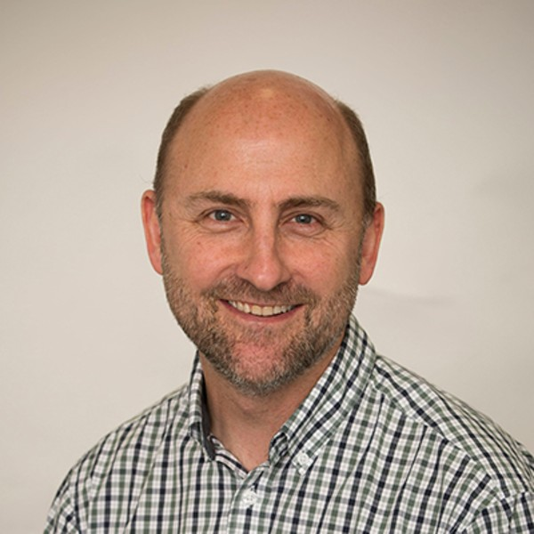
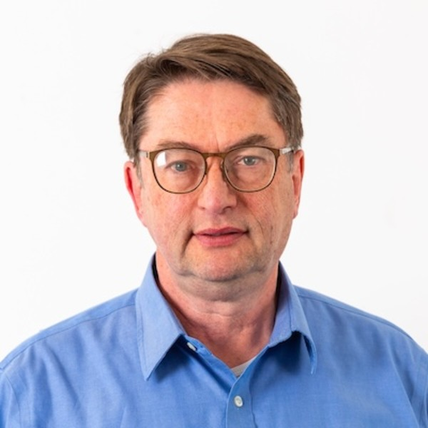
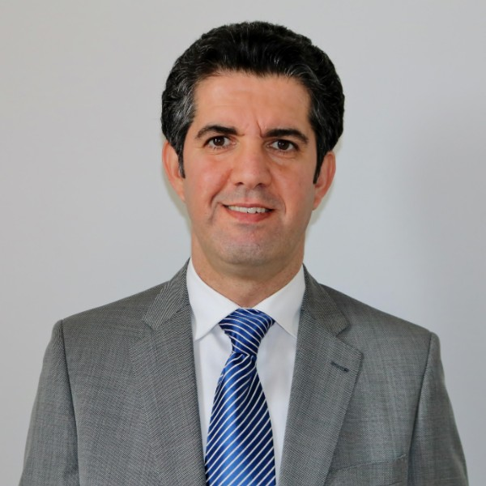
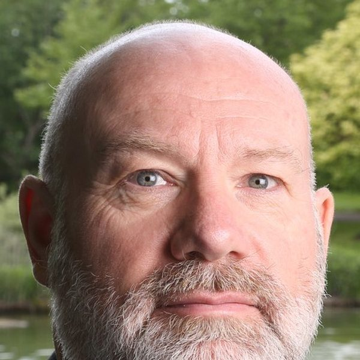

How our themes collaborate
Who actually writes with whom. Each line is co-authorship between two of our four research themes, counted from our research outputs for 2018 to 2025 and including our doctoral researchers, who are placed with their supervisor. The thin connections matter as much as the thick ones: they are where a cross-theme collaboration is only just beginning.

Associate Professor Marco-Felipe King
Combines quantitative microbial risk assessment (QMRA) with computational fluid dynamics and experiments in the UK's largest controlled aerobiology chamber to model pathogen transmission across air, hands, and surfaces.
Indoor Air Theme
Associate Professor Amirul Khan
Leads computational fluid dynamics research across building ventilation, urban air quality, and multiphase environmental flows, developing physics-informed machine learning surrogates for real-time flow prediction.
Methods & Capabilities
Prof. Catherine Noakes OBE
Internationally recognised leader in airborne infection transmission, building ventilation, and air cleaning technologies. Recipient of the 2026 Pettenkofer Award (Indoor Air 2026), Fellow of the Royal Academy of Engineering, and former Chair of the SAGE Environment and Modelling Group.
Read Impact Story
Dr. Cynthia Okoro-Shekwaga
Specialises in anaerobic digestion, biomethane enhancement, and agricultural digestate valorisation. Principal Investigator of the £1.75M Ayrton Challenge Energy (Innovate UK) BioCool project for off-grid biogas-powered milk cooling in East Africa.
View Profile
Prof. Barbara Evans
Global leader in urban sanitation, faecal sludge management, and public health engineering. Co-developer of the Shit Flow Diagram (SFD) and lead on climate-resilient sanitation and safely managed services across Africa and South Asia.
Read Impact Story
Prof. Martin Tillotson
Researches water and wastewater treatment, microplastics removal in drinking water, sludge processing, resource recovery, and water utility regulation. Co-Director of the EPSRC WaterWISER CDT.
Water Theme
Prof. Doug Stewart
Investigates environmental geochemistry, contaminant fate and transport in soils and groundwater, radioactive land contamination, and the circular use of industrial mineral wastes and legacy slags in low-carbon construction materials.
Water Theme
Prof. Mark Trigg
Researches flood risk, global water hazards, river hydraulics, and hydrological modelling, examining how extreme rainfall and flooding affect urban infrastructure and sanitation systems.
Water Theme
Prof. Simon Rees
Specialises in building energy systems, heat transfer, ground-source heat pumps, and low-carbon ventilation, balancing indoor environmental quality with net-zero energy performance.
Indoor Air Theme
Dr. Miller Alonso Camargo-Valero
Leads research on nature-based wastewater treatment, microalgae and duckweed biorefineries, nutrient recovery, and circular bioresource systems across the UK, Latin America, and Sub-Saharan Africa.
BioResources Theme
Associate Professor Anne Velenturf
Works on whole-system resource flows and sustainable circular economy transitions across offshore wind infrastructure, renewable energy systems, and the foundation industries (metals, ceramics, glass, cement, and chemicals).
BioResources Theme
Dr. Mohsen Besharat
Investigates transient hydraulic flows, air–water two-phase interactions in pressurised pipelines, surge protection, and pumped-hydro energy storage using physical experiments and CFD.
Water Theme
Dr. Duncan Borman
Applies multiphase computational fluid dynamics and physical modelling to hydraulic infrastructure, reservoir and treatment tank hydrodynamics, and indoor and outdoor environmental flows.
Water Theme
Dr. Xiaohui Chen
Develops coupled thermo-hydro-mechanical-chemical (THMC) poromechanics models and physics-informed machine learning methods for multiphase subsurface flow, groundwater, and contaminant transport.
Water ThemeDr. Akintunde Babatunde
Researches constructed wetlands, nature-based water and wastewater treatment processes, nutrient removal, and sustainable urban water management.
Water ThemeDr. Paul Hutchings
Examines the institutional, financial, and political economy dimensions of rural and urban water and sanitation service delivery, public finance, and climate-resilient WASH governance.
Sanitation & WASH ThemeDr. Sally Shahzad
Researches thermal comfort, personal comfort systems, occupant behaviour, and low-energy ventilation in buildings.
Indoor Air Theme
Dr. Louise Fletcher
Environmental microbiologist leading aerobiology chamber studies, bioaerosol sampling, germicidal UV-C disinfection trials, and bioaerosol emissions monitoring at waste and composting facilities.
Research Facilities
Dr. Douglas Booker
Combines low-cost sensor networks with critical social science to investigate indoor air quality inequalities, environmental justice, and air pollution exposure in schools and homes.
Indoor Air ThemeDr. Mark Tarn
Develops lab-on-a-chip microfluidic platforms for droplet freezing assays, atmospheric ice-nucleating particle analysis, and rapid bioaerosol and pathogen detection across polar, marine, and indoor environments.
Indoor Air Theme
Dr. Waseem Hiwar
Conducts experimental research in the controlled walk-in aerobiology chamber on airborne pathogen survival, hospital ventilation, and air cleaning interventions.
Research Facilities
Dr. Maryam Asachi
Researches chemical and environmental process engineering, solid–liquid separation, nutrient recovery, and digital process optimisation in wastewater treatment.
Water ThemeDr. Subarna Sivashanmugam
Focuses on sustainable waste management, anaerobic digestion, hydrothermal carbonisation, and circular economy resource recovery from organic waste streams.
BioResources Theme
Dr. Shashank Bettadapura Subramanyam
Researches environmental geotechnics, soil–waste interactions, and sustainable ground engineering using recycled and secondary materials.
BioResources ThemeClaire Grisaffi
Investigates the regulation, formalisation, and professionalisation of non-sewered sanitation, faecal sludge emptying, and transport services in low- and middle-income cities.
Sanitation & WASH Theme
Ruth Sylvester
Works across the urban sanitation service chain, municipal health data governance, and the institutional systems required to sustain safely managed WASH services.
Sanitation & WASH ThemeDr. Zhe Zhan
Researches the climate resilience of on-site sanitation systems, combining field sampling in India and Uganda with multiphase CFD modelling to quantify how floodwater interacts with pit latrines and septic tanks.
Sanitation & WASH Theme
Dr. Franja Prosenc
Investigates microalgae-based wastewater treatment, removal of micropollutants and contaminants of emerging concern, and circular bioresource recovery.
BioResources Theme
Prof. Paul Eke
Water engineer specialising in hydrocarbon removal with constructed wetlands and applying artificial neural networks to optimise and manage sustainable drainage and treatment systems.
Water Theme
Prof. Jamie Bartram
Former coordinator of Water, Sanitation, Hygiene and Health at the World Health Organization; internationally recognised leader in global drinking-water safety plans, sanitation policy, and public health.
Sanitation & WASH Theme
Prof. Andy Sleigh
Specialist in computational hydraulics, open-channel flows, and quantitative microbial risk assessment; co-developer of the Shit Flow Diagram (SFD) graphic generator and methodology.
Read Impact Story
Dr. David Elliott
Oversees the Public Health and Environmental Engineering Laboratories, analytical instrumentation, microbiological safety, and experimental support across all WPE research themes.
Research Facilities
Bushra Hasan
Investigates bioaerosol dynamics, indoor air quality, and infection risk modelling in built environments. Co-organises the weekly WPE Cake Meetings seminar series.
Cake Meetings
Johan Pasos-Panqueva
Researches sustainable aquaculture nutrient recycling and protein recovery using duckweed biorefinery systems, supervised by Dr Miller Alonso Camargo-Valero.
BioResources Theme
Jack Dalton
Investigates the effects of ventilation systems and air distribution on airborne pathogen transmission in healthcare settings.
Indoor Air Theme
Gettie Shiinda
Researches microbial communities and pathogen inactivation in anaerobic digestion and sanitation treatment systems.
Sanitation & WASH Theme
Anushi Khandare
Optimises the performance of air-cleaning technologies for mitigating airborne and surface infection transmission in hospital environments using chamber experiments and CFD.
Indoor Air Theme
Xiaoxuan Qin
Models respiratory pathogen exposure on public transport across combined airborne and surface-contact transmission routes.
Indoor Air Theme
Dr. Tatiana Zúñiga
Researched microalgae cultivation and nutrient recovery from wastewater in photobioreactor systems.
BioResources ThemeDr. Jemma Phillips
Researched exposure pathways to enteric pathogens through water, sanitation, and hygiene systems.
Sanitation & WASH Theme